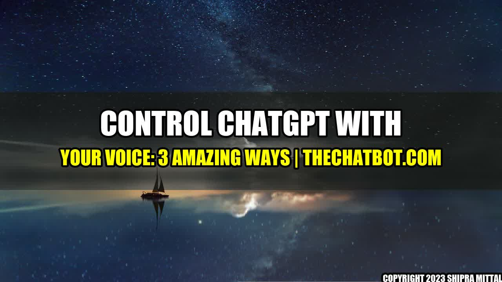

Control ChatGPT With Your Voice: 3 Amazing Ways
It was a busy day at the office for Tara, a marketing manager at a leading e-commerce company. She had several deadlines to meet and was working on multiple projects at once. That's when she realized she needed a helping hand. But instead of chatting with a human customer service agent, she decided to use ChatGPT, an AI-powered chatbot that was recently integrated into the company's website.
"Hey ChatGPT, can you give me a list of all the pending tasks for today?" Tara asked.
To her surprise, ChatGPT responded instantly, "Sure thing, Tara. You have three pending tasks for today - submitting the weekly report, scheduling a meeting with the design team, and reviewing the ad copy for the new product launch."
Tara was amazed by the speed and accuracy of ChatGPT's response. That's when she realized the power of voice control for chatbots. Here are three amazing ways to control ChatGPT with your voice:
1. Voice-Activated Personal Assistant
The first way to control ChatGPT with your voice is by using it as a personal assistant. You can ask it to perform various tasks for you, such as:
- Checking the weather
- Setting reminders
- Ordering food
- Booking a ride
Companies like Google and Amazon have already launched voice-activated personal assistants, such as Google Assistant and Alexa. By integrating ChatGPT with your preferred personal assistant, you can perform even more complex tasks.
2. Voice-Activated Customer Service
The second way to control ChatGPT with your voice is by using it as a customer service agent. Imagine being able to call a customer service hotline and talk to ChatGPT instead of a human agent. With voice control, you can:
- Ask for product recommendations
- Check the status of your order
- Get troubleshooting help
- File a complaint
Companies like IBM and LivePerson have already implemented voice-activated customer service solutions. By using ChatGPT as your voice-activated agent, you can enjoy faster response times and more accurate answers.
3. Voice-Activated Sales Assistant
The third way to control ChatGPT with your voice is by using it as a sales assistant. You can ask it to perform various sales-related tasks, such as:
- Checking product availability
- Providing product information
- Offering personalized discounts
- Suggesting cross-sell or upsell items
Companies like Salesforce and Shopify have already implemented voice-activated sales assistant solutions. By integrating ChatGPT with your sales system, you can automate your sales process and offer a seamless shopping experience to your customers.
Conclusion
Voice control for chatbots is the future of customer service and personal assistance. By using the power of natural language processing (NLP) and machine learning (ML), companies can offer faster, more accurate, and more personalized services to their customers. Whether you need a personal assistant, a customer service agent, or a sales assistant, ChatGPT can help you achieve your goals more efficiently. Try it today!
Akash Mittal Tech Article
Share on Twitter Share on LinkedIn